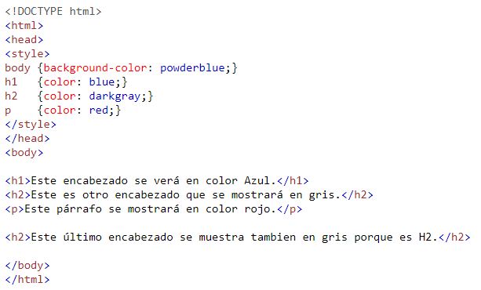
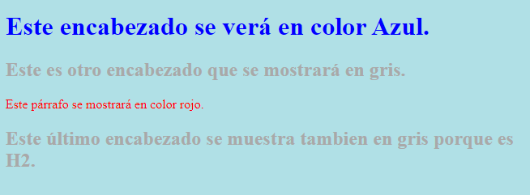
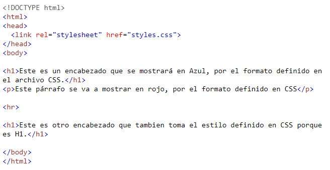
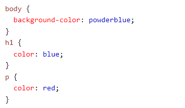
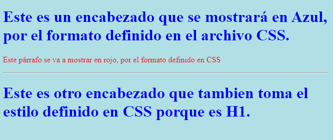

¿ Qué es CSS ?
Significa Hojas de Estilo en Cascada (Cascade Style Sheet) y mediante ellas se puede controlar, el color, la fuente, el tamaño del texto, el espaciado entre elementos HTML, además de cómo se colocan y distribuyen dichos elementos por la pantalla y no se exagera al decir ¡Mucho Más!.
Uno de los mayores beneficios que otorga el uso de CSS es que ahorra muchísimo trabajo ya que se puede controlar la apariencia de múltiples páginas web, con una sola hoja de estilos.
La forma más común de agregar estilo mediante CSS es usando archivos externos CSS. Sin embargo para fines demostrativos en este tutorial veremos las primeras 2 formas (Inline e Interno).
Al aplicar estilo de esta forma, estamos modificando un único elemento HTML, por lo que si tenemos 10 o 15 elementos en una página tendremos que hacer la definición de estilo para cada uno de ellos de forma individual. Este método de agregar estilo usa el atributo style de los elementos HTML.
A continuación se muestra un ejemplo de esto:
<h1 style="color:blue;">Esto es un encabezado con formato InLine para poner el texto en Azul.</h1>
<p
style="color:red;">Esto es un párrafo con formato InLine para poner el texto en rojo.</p>
Esto es un párrafo con formato InLine para poner el texto en rojo.
El CSS interno es usado para definir estilos a una sola página HTML y este método ya representa cierto ahorro en tiempo considerando los elementos que pueden ser comunes en una página. un CSS interno es definido en la sección <head> de una página HTML, dentro del elemento <style >.
A continuación se muestra una imagen con un ejemplo de una página con CSS Internal:
Y el navegador la desplegaría de la siguiente forma:
El CSS externo es usado para definir estilos en muchas páginas HTML, y es con este método donde se explota too el potencial de trabajo con CSS precisamente por esta caracteristica. Para usar una hoja de estilos externa (CSS External) se agrega un elemento <link> en la sección <head> de cada página HTML que se desea implementen los estilos.
A continuación se muestra una imagen con un ejemplo de una página con CSS Externo:
Considerando que el archivo CSS externo es el siguiente:
El navegador la deslegaría de la siguiente forma:
